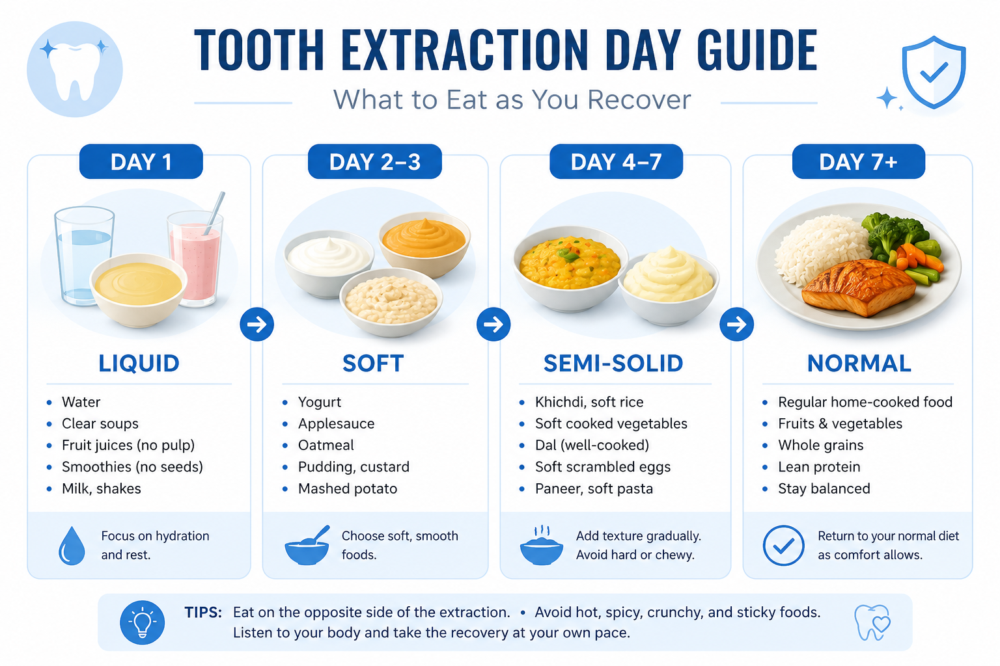
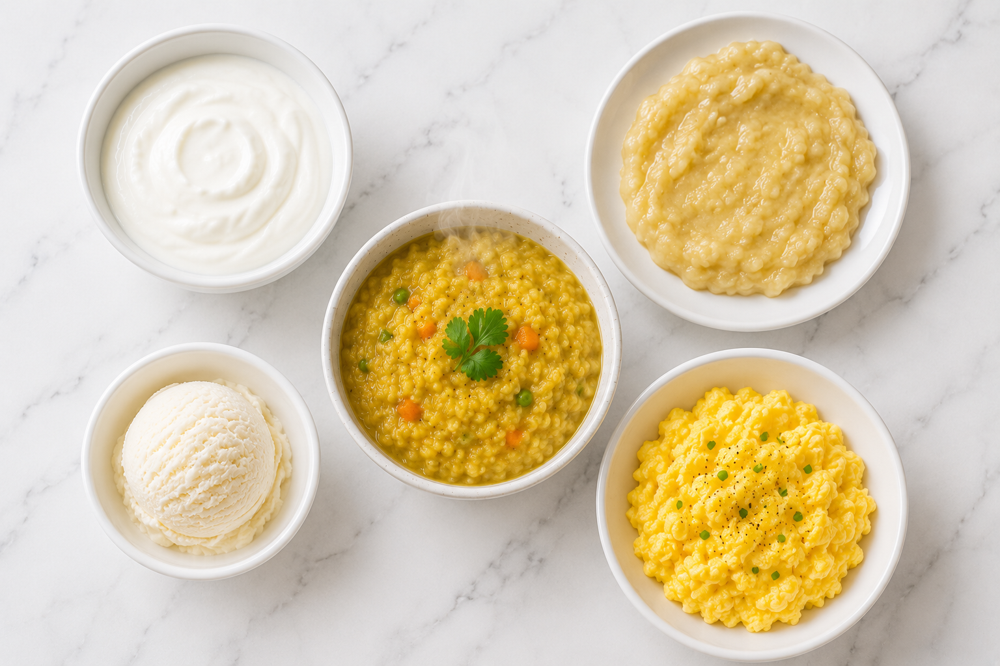

Getting a tooth extracted at a dental clinic in Berhampur is a common procedure — but what you eat in the days after directly affects how quickly and comfortably you heal. The wrong food at the wrong time can dislodge the blood clot, cause infection, or lead to a painful condition called dry socket. The right food, on the other hand, can speed up healing and keep you comfortable. Here's everything you need to know.
1. Why Does Diet Matter So Much After Tooth Extraction?
After a tooth is pulled, your body forms a blood clot at the extraction site. This clot is the foundation for healing — it protects the exposed bone and nerves underneath. Eating the wrong food can:
- 🩸 Disturb or dislodge the blood clot (leads to dry socket)
- 🦠 Introduce bacteria into the open wound (infection)
- 🔥 Increase swelling and pain with hot or spicy foods
- 😬 Get food particles stuck inside the socket
Most patients at Dr. Smile Dental Clinic Berhampur heal well within 7–10 days when they follow a proper post-extraction diet. Patients who ignore these guidelines often come back with complications.
2. Day-by-Day Diet Guide After Tooth Extraction
Recovery happens in stages — and your diet should match each stage. Here is exactly what to eat on each day after a tooth extraction:
1
Liquids & Cold Foods Only
The extraction site is most sensitive on Day 1. Stick to cold or room-temperature liquids only. Do not use a straw.
- 🥛 Cold milk or cold lassi
- 🥥 Coconut water (room temperature)
- 🍦 Plain ice cream or cold yogurt (dahi)
- 🍌 Mashed banana (soft, no chewing needed)
- 🍵 Thin dal water (lukewarm — not hot)
2–3
Soft & Mashed Foods
Swelling begins to reduce. You can now eat soft, mashed foods. Chew on the opposite side of the extraction.
- 🍚 Soft khichdi or curd rice
- 🥚 Scrambled eggs or soft boiled eggs
- 🫘 Mashed dal (thin consistency)
- 🍛 Soft idli with sambar (not spicy)
- 🍌 Mashed fruits — banana, chikoo, papaya
4–7
Semi-Solid Foods
For most patients, healing is well underway by Day 4. You can carefully expand your diet.
- 🫓 Soft chapati with dal or sabzi
- 🍝 Pasta or noodles (soft, not spicy)
- 🧀 Soft paneer dishes (not fried)
- 🐟 Soft fish curry (boneless, not spicy)
- 🍲 Soft-cooked vegetables — lauki, palak
7+
Gradual Return to Normal Diet
After 7–10 days, if there is no pain or swelling, slowly resume your regular diet. Still avoid very hard or crunchy foods near the extraction site.
- ✅ Most regular foods are now safe
- ✅ Continue chewing away from the extraction side
- ✅ Visit Dr. Smile Dental Clinic for a follow-up check

3. Best Soft Foods to Eat After Tooth Extraction
These foods are safe, nutritious, require minimal chewing, and are easily available in Berhampur. They support healing without disturbing the blood clot:
Mashed Banana
Soft, requires zero chewing, naturally available everywhere in Berhampur. Rich in potassium for healing.
Plain Ice Cream
Cold temperature naturally reduces swelling. Choose plain flavours — no nuts, brittle, or wafer cones that can break into sharp pieces.
Curd Rice (Dahi Chawal)
Soft, cool, easy to swallow. The probiotics in curd also help prevent infection. A staple of post-extraction diet in Odisha.
Khichdi
Soft rice and dal cooked together — gentle on the wound, nutritious, and easy to digest. Make it thin and not too hot.
Scrambled Eggs
High in protein — essential for tissue repair. Soft texture is easy to eat without putting pressure on the extraction site.
Coconut Water
Hydrating, naturally cool, and full of electrolytes. Helps with recovery and does not irritate the extraction site.
Yogurt (Dahi)
Cold, soft, and packed with calcium and probiotics. One of the easiest and most soothing foods after tooth extraction.
Vegetable Soup
Nutritious and easy to eat. Make sure it is lukewarm — not hot. Blend it smooth so there are no hard vegetable pieces.

4. Foods to Strictly Avoid After Tooth Extraction
These foods can dislodge the blood clot, cause infection, or severely delay healing. Avoid them for at least 7 days after extraction — longer for wisdom tooth removal:
🚫 Strictly Avoid These Foods & Habits:
- 🍟 Hard & Crunchy Foods — Chips, papad, roasted chana, biscuits, toast. These can break the blood clot or get stuck in the socket.
- 🌶️ Spicy Foods — Spicy curries, chutney, pickle. Spices irritate the wound and can cause significant pain and delay healing.
- ☕ Hot Drinks & Hot Food — Hot tea, hot coffee, hot dal or soup. Heat increases blood flow to the area and can restart bleeding.
- 🍺 Alcohol — Interferes with blood clot formation, reacts with any medications prescribed, and significantly slows healing.
- 🥤 Straws — The suction force created by using a straw is one of the most common causes of dry socket. Avoid for at least 72 hours.
- 🚬 Smoking & Tobacco — The single biggest risk factor for dry socket. Tobacco contains chemicals that destroy the blood clot. Avoid for at least 5 days.
- 🌰 Seeds, Nuts & Small Grains — Sesame seeds, mustard seeds, groundnuts — these tiny pieces get trapped inside the socket and cause infection.
- 🍬 Sticky Foods — Chewing gum, caramel, toffee, jalebi — these pull directly on the blood clot and can dislodge it instantly.

5. Eating Tips for Faster Healing
💡 Dr. Smile's Tips for Eating After Extraction:
- 🔄 Always chew on the opposite side of the extraction site
- 🌡️ Let hot food cool down to lukewarm or room temperature before eating
- 🚫 Never use a straw — the suction can pull out the blood clot
- 🦷 Do not rinse forcefully for the first 24 hours after extraction
- 💧 Stay hydrated — drink plenty of water (no straw)
- 🛌 Eat before lying down — do not eat right before sleeping and then lie flat
- 🍚 Rinse gently with lukewarm salt water after eating from Day 2 — helps keep the socket clean
What About Wisdom Tooth Extraction Diet?
Wisdom tooth extraction involves a larger wound site and usually more post-operative swelling. The same diet rules apply — but follow them for a longer period (10–14 days) instead of 7. Soft foods, no straws, no spicy or hot food, and absolutely no smoking or alcohol. If you had your wisdom teeth removed at Dr. Smile Dental Clinic Berhampur, follow the specific instructions given to you at discharge.
🦷 Need a Tooth Extraction in Berhampur?
Dr. Smile Dental Clinic offers gentle, painless tooth extraction with full post-procedure care guidance — so you heal fast and comfortably.
📞 Book an Appointment6. Frequently Asked Questions
Q: What can I eat after a tooth extraction?
After tooth extraction, eat soft, cold or room-temperature foods: yogurt (dahi), mashed banana, cold milk, coconut water, soft khichdi, curd rice, scrambled eggs, soft idli, and plain ice cream. Avoid hard, spicy, hot, or crunchy foods for at least 7 days to protect the healing blood clot.
Q: What foods to eat for healthy teeth?
For strong, healthy teeth, eat calcium-rich foods like milk, paneer, and dahi; crunchy vegetables like carrots and cucumber that naturally clean teeth; leafy greens like spinach; eggs and fish for phosphorus; and drink plenty of water to wash away bacteria. Limit cold drinks, sugary snacks, and refined carbohydrates.
Q: Which food should be strictly avoided after tooth extraction?
Strictly avoid: hard and crunchy foods (chips, papad, roasted chana), hot food and drinks, spicy food, alcohol, straws, smoking or tobacco, seeds and small grains, and sticky foods like chewing gum or caramel. These can dislodge the blood clot and cause dry socket — a very painful complication.
Q: Can I eat rice after tooth extraction?
Yes — soft, well-cooked rice is safe from Day 2 onwards. Khichdi (rice + dal), curd rice, and plain soft rice with thin dal are some of the best options. Make sure the rice is not too hot and not too hard or fried. Avoid hard or crispy rice preparations.
Q: How long after tooth extraction can I eat normally?
Most patients can return to a near-normal soft diet by Day 3–4. A fully normal diet usually resumes after 7–10 days once the wound is healed. For wisdom tooth extraction, this may take 10–14 days. Always follow your dentist's specific instructions after any procedure at Dr. Smile Dental Clinic Berhampur.
Q: Can I eat ice cream after tooth extraction?
Yes! Plain ice cream (without crunchy toppings, wafer cones, or nuts) is one of the best foods on Day 1 after extraction. The cold temperature helps reduce swelling and numb pain naturally. Avoid ice cream with hard mix-ins or brittle pieces that can irritate the socket.
Q: Can I drink water after tooth extraction?
Yes, drinking water is safe and encouraged. Drink room-temperature or cold water — not hot. The most important rule: do NOT use a straw for at least 72 hours. The suction from a straw can dislodge the blood clot and cause dry socket — a very painful complication that requires an emergency dental visit.
Q: What is dry socket and how do I prevent it?
Dry socket happens when the blood clot at the extraction site is dislodged before the wound heals — exposing the bone and nerves underneath. It causes severe throbbing pain that can spread to the ear or jaw, usually starting 2–3 days after extraction. Prevent it by avoiding straws, smoking, alcohol, hard foods, and forceful rinsing. If you experience severe pain after extraction in Berhampur, visit Dr. Smile Dental Clinic immediately.
📖 Related Article
Experiencing tooth pain before or after your extraction? Read our guide: Tooth Pain Home Remedies in Berhampur — 6 Instant Relief Tips →